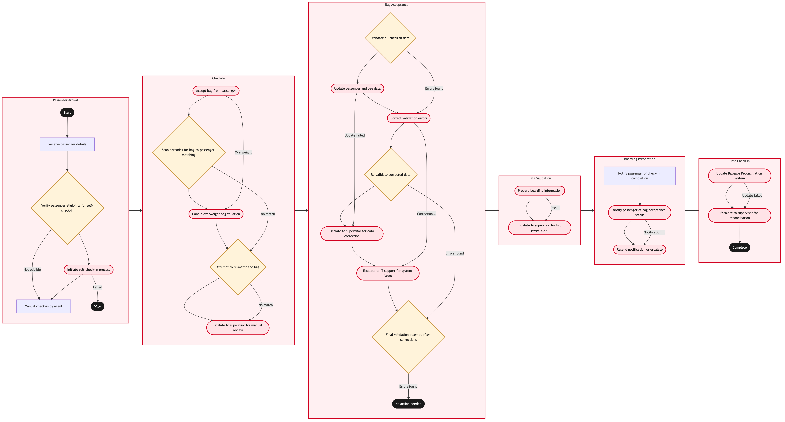

Updated 2026-08-21
Airport Check In and Bag Acceptance
Process flow
Click to zoom

Process steps
▼
Phase 1 — Passenger Arrival
4 steps
| Step | Activity | Role | System | Input | Output | KPI | Dec | Exc | Pain point |
|---|---|---|---|---|---|---|---|---|---|
| 1.1 | Receive passenger details | YYZ Operations Control Duty Manager | CUPPSC | Passenger ID, flight information | Passenger data loaded into CUPPS | 80% successful data entry within 2 minutes | N | N | Manual data entry can be prone to errors. |
| 1.2 | Verify passenger eligibility for self-check-in | Aeroplan Member Services Agent | CUPPSC | Passenger ID, membership status | Eligibility status | 95% accuracy in eligibility checks within 30 seconds | Y | N | Inaccurate data can lead to passenger frustration. |
| 1.3 | Initiate self-check-in process | Passenger | CUPPSC | Self-service kiosk input | Check-in confirmation | 90% successful check-ins within 5 minutes | N | Y | Technical issues with kiosks can cause delays. |
| 1.4 | Manual check-in by agent | Aeroplan Member Services Agent | CUPPSC | Passenger details, manual input | Check-in confirmation | 85% successful check-ins within 10 minutes | N | N | Manual processes are slower and more prone to errors. |
▼
Phase 2 — Check-In
5 steps
| Step | Activity | Role | System | Input | Output | KPI | Dec | Exc | Pain point |
|---|---|---|---|---|---|---|---|---|---|
| 2.1 | Accept bag from passenger | Baggage Compliance Agent | Amadeus Altea DCSA | Bag details, weight | Bag acceptance confirmation | 98% successful bag acceptances within 5 minutes | N | Y | Overweight bags cause delays and need manual handling. |
| 2.2 | Scan barcodes for bag-to-passenger matching | Baggage Compliance Agent | Amadeus Altea DCSA | Barcode scan, passenger ID | Match status | 95% successful matches within 1 minute | Y | N | Mis-scans lead to bag handling delays. |
| 2.3 | Handle overweight bag situation | Baggage Compliance Agent | Amadeus Altea DCSA | Overweight bag details, passenger instructions | Updated bag weight status | 80% successful reweighs within 15 minutes | N | Y | Complexity in managing overweight bags leads to delays. |
| 2.4 | Attempt to re-match the bag | Baggage Compliance Agent | Amadeus Altea DCSA | Re-scanned barcode, passenger ID | Match status | 85% successful rematches within 3 minutes | Y | N | Repeated mismatches can frustrate passengers. |
| 2.5 | Escalate to supervisor for manual review | Baggage Compliance Agent | Amadeus Altea DCSA | Mismatch details, passenger information | Supervisor action required | 90% successful escalations within 10 minutes | N | Y | Manual reviews consume additional time and resources. |
▼
Phase 3 — Bag Acceptance
7 steps
| Step | Activity | Role | System | Input | Output | KPI | Dec | Exc | Pain point |
|---|---|---|---|---|---|---|---|---|---|
| 3.1 | Validate all check-in data | YYZ Operations Control Duty Manager | Amadeus Altea DCSA | Check-in, bag acceptance data | Validation status | 95% successful validations within 2 minutes | Y | N | Data validation errors can cause boarding delays. |
| 3.2 | Update passenger and bag data | YYZ Operations Control Duty Manager | Amadeus Altea DCSA | Corrected data | Updated records | 85% successful updates within 4 minutes | N | Y | Updating incorrect data can lead to further delays. |
| 3.3 | Correct validation errors | YYZ Operations Control Duty Manager | Amadeus Altea DCSA | Error details, corrected information | Corrected data | 90% successful corrections within 6 minutes | N | Y | Complex errors require additional time to resolve. |
| 3.4 | Re-validate corrected data | YYZ Operations Control Duty Manager | Amadeus Altea DCSA | Corrected data | Validation status | 85% successful validations within 2 minutes | Y | N | Multiple validation attempts can be time-consuming. |
| 3.5 | Escalate to supervisor for data correction | YYZ Operations Control Duty Manager | Amadeus Altea DCSA | Error details, passenger information | Supervisor action required | 90% successful escalations within 10 minutes | N | Y | Manual corrections consume additional time and resources. |
| 3.6 | Escalate to IT support for system issues | YYZ Operations Control Duty Manager | Amadeus Altea DCSA | System error details | IT resolution status | 80% successful resolutions within 15 minutes | N | Y | System downtime can severely impact operations. |
| 3.7 | Final validation attempt after corrections | YYZ Operations Control Duty Manager | Amadeus Altea DCSA | Corrected data | Validation status | 85% successful validations within 2 minutes | Y | N | Multiple validation attempts can be time-consuming. |
▼
Phase 4 — Data Validation
2 steps
| Step | Activity | Role | System | Input | Output | KPI | Dec | Exc | Pain point |
|---|---|---|---|---|---|---|---|---|---|
| 4.1 | Prepare boarding information | YYZ Operations Control Duty Manager | Amadeus Altea DCSA | Validated check-in data | Boarding list | 95% successful boarding lists within 3 minutes | N | Y | Delayed boarding lists can cause operational bottlenecks. |
| 4.2 | Escalate to supervisor for list preparation | YYZ Operations Control Duty Manager | Amadeus Altea DCSA | Boarding list details | Supervisor action required | 90% successful escalations within 10 minutes | N | Y | Manual list preparation consumes additional time and resources. |
▼
Phase 5 — Boarding Preparation
3 steps
| Step | Activity | Role | System | Input | Output | KPI | Dec | Exc | Pain point |
|---|---|---|---|---|---|---|---|---|---|
| 5.1 | Notify passenger of check-in completion | Aeroplan Member Services Agent | CUPPSC | Passenger information | Notification sent | 90% successful notifications within 2 minutes | N | N | Failed notifications can cause confusion. |
| 5.2 | Notify passenger of bag acceptance status | Baggage Compliance Agent | Amadeus Altea DCSA | Passenger information, bag status | Notification sent | 90% successful notifications within 3 minutes | N | Y | Failed notifications can cause passenger dissatisfaction. |
| 5.3 | Resend notification or escalate | Baggage Compliance Agent | Amadeus Altea DCSA | Passenger information, bag status | Notification sent or escalated | 80% successful resends within 5 minutes | N | Y | Repeated failures can cause prolonged passenger inconvenience. |
▼
Phase 6 — Post-Check In
2 steps
| Step | Activity | Role | System | Input | Output | KPI | Dec | Exc | Pain point |
|---|---|---|---|---|---|---|---|---|---|
| 6.1 | Update Baggage Reconciliation System | Baggage Compliance Agent | Baggage Reconciliation SystemC | Check-in, bag acceptance data | Updated records | 95% successful updates within 2 minutes | N | Y | Updating incorrect data can lead to further delays. |
| 6.2 | Escalate to supervisor for reconciliation | Baggage Compliance Agent | Baggage Reconciliation SystemC | Reconciliation details, passenger information | Supervisor action required | 90% successful escalations within 10 minutes | N | Y | Manual reconciliations consume additional time and resources. |
Swim lanes
YYZ Operations Control Duty Manager1.1 3.1 3.2 3.3 3.4 3.5 3.6 3.7 4.1 4.2
Aeroplan Member Services Agent1.2 1.4 5.1
Passenger1.3
Baggage Compliance Agent2.1 2.2 2.3 2.4 2.5 5.2 5.3 6.1 6.2
Systems touched
CUPPSCAmadeus Altea DCSABaggage Reconciliation SystemC
Key performance indicators
- 80% successful data entry within 2 minutes
- 95% accuracy in eligibility checks within 30 seconds
- 90% successful check-ins within 5 minutes
- 98% successful bag acceptances within 5 minutes
- 95% successful validations within 2 minutes
Risks and control points
- System downtime affecting multiple processes
- Manual data entry errors leading to passenger frustration
- Technical issues with kiosks causing delays
- Complex error resolution requiring additional time and resources
- Failed notifications leading to prolonged passenger inconvenience
Air Canada Process Wiki — process and systems reference compiled from public sources
for IT Application Management and User Support pre-sales discovery.
Built 2026-08-21. Every system carries an evidence tier: tier C is an industry pattern and tier U is an open
question, and neither should be asserted as fact about Air Canada without confirmation in discovery.
Not affiliated with or endorsed by Air Canada. Air Canada, Aeroplan and Altitude are trademarks of Air Canada.